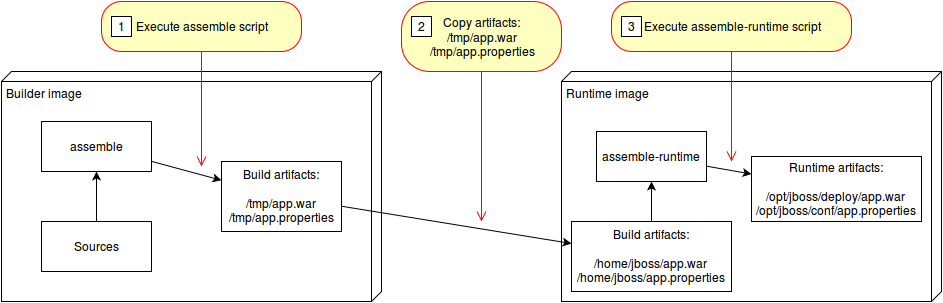

Source To Image Builder for Open Liberty Applications on OpenShift¶
This project contains a Source-to-Image (S2I) builder image and a S2I runtime image which creates an image running Java web applications on Open Liberty.
Source-to-Image (S2I) is an open source toolkit for building reproducible container images from source code. S2I produces ready-to-run images by injecting source code into a container image.
The Open Liberty builder can be used in two different environments:
- Local Docker runtime via 's2i',
- Deployment to OpenShift'.
With interpreted languages like python and javascript, the runtime container is also the build container. For example, with a node.js application the 'npm install' is run to build the application and then 'npm start' is run in the same container in order to start the application.
However, with compiled languages like Java, the build and runtime processes can be separated. This will allow for slimmer runtime containers for faster application starts and less bloat in the application image.
This lab will focus on the second scenario of using a builder image along with a runtime image.
 (source: https://github.com/openshift/source-to-image/blob/master/docs/runtime_image.md)
Structure of this repository¶
Prerequisites¶
The following prerequisites are needed:
Setup¶
-
Clone this repository locally and navigate to the newly cloned directory.
git clone https://github.com/IBM/s2i-open-liberty-workshop.git cd s2i-open-liberty-workshop -
If you are running this lab in a browser based terminal environment like Skills Network and need to install the Source to Image CLI tool, follow this step:
- Run the setup script
chmod +x ./setup.sh ./setup.sh export PATH=$HOME/s2i:$PATH -
To make things easier, we are going to set some environment variables that we can reuse in later commands.
Note: Replace Your Username with your actual docker hub username. If you do not have one, go here to create one.
export ROOT_FOLDER=$(pwd) export DOCKER_USERNAME=<your-docker-username> -
Log in with your OpenShift Cluster.
-
Open your
OpenShift web consoleand from the profile dropdownCopy Login Command. -
Paste the login command to login, e.g.
oc login --token=<login-token> --server=https://<cluster-subdomain>:<service-port>
Build the builder image¶
In this section we will create the first of our two S2I images. This image will be responsible for taking in our source code and building the application binary with Maven.
-
Navigate to the builder image directory
cd ${ROOT_FOLDER}/builder-image -
Review the ./Dockerfile
cat Dockerfile-
The image uses a Redhat certified Universal Base Image (UBI) from the public container registry at Redhat,
FROM registry.access.redhat.com/ubi8/ubi:8.1
-
-
You can customize the builder image further, e.g. change the
LABELformaintainerto your name,LABEL maintainer="<your-name>" -
Now build the builder image.
docker build -t $DOCKER_USERNAME/s2i-open-liberty-builder:0.1.0 . -
Push the builder image out to Docker hub.
docker login docker push $DOCKER_USERNAME/s2i-open-liberty-builder:0.1.0With that done, you can now build your runtime image.
Build the runtime image¶
In this section you will create the second of our two S2I images. The runtime image will be responsible for taking the compiled binary from the builder image and serving it with the Open Liberty application server.
-
Navigate to the runtime image directory
cd $ROOT_FOLDER/runtime-image -
Review the ./Dockerfile
cat Dockerfile -
Build the runtime image
docker build -t $DOCKER_USERNAME/s2i-open-liberty:0.1.0 . -
Push the runtime image to Docker hub.
docker push $DOCKER_USERNAME/s2i-open-liberty:0.1.0Now we are ready to build our application with S2I.
Use S2I to build the application container¶
In this section, we will use S2I to build our application container image and then we will run the image locally using Docker.
-
Use the builder image and runtime image to build the application image
cd $ROOT_FOLDER/web-app -
Run a multistage S2I build, to build the application.
s2i build . $DOCKER_USERNAME/s2i-open-liberty-builder:0.1.0 authors --runtime-image $DOCKER_USERNAME/s2i-open-liberty:0.1.0 -a /tmp/src/target -a /tmp/src/server.xmlLet's break down the above command:
s2i build .: Uses2i buildin the current directory to build the Docker image by combining the builder image and sources$DOCKER_USERNAME/s2i-open-liberty-builder:0.1.0: This is the builder image used to build the applicationauthors: name of our application image--runtime-image $DOCKER_USERNAME/s2i-open-liberty:0.1.0: Take the output of the builder image and run it in this container.-a /tmp/src/target -a /tmp/src/server.xml: Theruntime-artifactflag specifies a file or directory to be copies from builder to runtime image. The runtime-artifact is where the builder output is located. These files will be passed into the runtime image.
-
Run the newly built image to start the application on your local machine in the background,
docker run -d --rm -p 9080:9080 authors -
Retrieve the authors using curl,
curl -X GET "http://localhost:9080/api/v1/getauthor" -H "accept: application/json" -
Or open up your browser and navigate to http://localhost:9080/openapi/ui to view your deployed microservice.
Deployment to OpenShift¶
In the following labs we will be using two deployment strategies:
- manually deploy as a traditional Kubernetes
Deployment, and - automatic build and deployment using OpenShift
BuildConfigandDeploymentConfig.
Both ways are very similar, the main difference being that with OpenShift BuildConfig and DeploymentConfig we can set triggers to automatically build the application when a new image tag has been pushed to the internal registry.
Now that we have the application running locally and have verified that it works, let's deploy it to an OpenShift environment.
-
In order to deploy to OpenShift, we need to push our images to your cluster's internal registry. First, run the following commands to authenticate with your OpenShift image registry.
oc patch configs.imageregistry.operator.openshift.io/cluster --patch '{"spec":{"defaultRoute":true}}' --type=merge export REGISTRY=$(oc get route default-route -n openshift-image-registry --template='{{ .spec.host }}') echo $REGISTRY docker login -u $(oc whoami) -p $(oc whoami -t) $REGISTRY
Deploying as a traditional Kubernetes deployment¶
For this method, we will deploy our application by creating a kubernetes deployment along with a service and a route.
-
Tag the image that was created in the previous section.
export IMAGE=docker.io/$DOCKER_USERNAME/authors:0.1.0 echo $IMAGE docker tag authors $IMAGE -
Push the image that we built locally using s2i to the OpenShift image registry.
docker push $IMAGE -
Go back to the root folder,
cd $ROOT_FOLDER -
Review the
application.yamlfile,sed -i "s|APPLICATION_IMAGE|$IMAGE|" application.yaml cat application.yaml -
Apply the
application.yamlfile using theoccli to create our Deployment, Service, and Route.oc apply -f application.yaml -
Now let's visit the deployed application. Run the following to get the route to access the application.
oc get routes -l app=authors -o go-template='{{range .items}}{{.spec.host}}{{end}}' -
Copy and paste the output of the previous command to set a variable $APP_URL,
export APP_URL=<get-routes-output> -
Test the application using curl
curl -X GET "http://$APP_URL/api/v1/getauthor" -H "accept: application/json" -
Or use the route to your app and paste it into your web browser and add the following to the end of the route:
/openapi/uiSo your route should appear like the following but without the (...):
authors-route-default...appdomain.cloud/openapi/uiIt sometimes takes a minute to fully deploy so if you get a message about the application not being available, try again.
You should now see the OpenAPI documentation for the getAuthor endpoint of your microservice.
Automating deployment with BuildConfig and DeploymentConfig¶
For this section, you will explore how to automate our application build and deploy using OpenShift concepts known as build config and deployment config. With build configs, the s2i builds are actually happening on the cluster rather than locally.
-
Tag our builder and runtime images for OpenShift registry.
docker tag $DOCKER_USERNAME/s2i-open-liberty-builder:0.1.0 $REGISTRY/default/s2i-open-liberty-builder:0.1.0 docker tag $DOCKER_USERNAME/s2i-open-liberty:0.1.0 $REGISTRY/default/s2i-open-liberty:0.1.0 -
Push the images to the registry.
docker push $REGISTRY/default/s2i-open-liberty-builder:0.1.0 docker push $REGISTRY/default/s2i-open-liberty:0.1.0 -
We are almost ready to deploy our application but first we need to create an application template that contains all the components of our application. See Using Templates.
-
Review the
template.yamlfile, which contains the BuildConfig object and the DeploymentConfig object as well as the other application objects,cat template.yaml -
The template file that we will apply, creates the following Kubernetes objects:
- Template,
- 4 ImageStream objects: authors-builder, authors-runtime, s2i-open-liberty-builder, s2i-open-liberty
- 2 BuildConfig objects: the
open-liberty-builderproduces aauthors-builder:0.1.0froms2i-open-liberty-builder:0.1.0; and theopen-liberty-appproduces anauthors-runtime:0.1.0froms2i-open-liberty:0.1.0. The former build config is for the builder image and the latter is for the runtime image. - DeploymentConfig for
authors-runtime:0.1.0to manage the application Pods and ReplicationController, - Service, and
- Route.
oc apply -f template.yaml -
Lastly, we can use the
occli to deploy the application while using the template that was just created.oc new-app --template open-liberty-app -p DOCKER_USERNAME=$DOCKER_USERNAMEAfter running the command you may see a message that says
Failedhowever this is because the build has not yet completed.... --> Creating resources ... imagestream.image.openshift.io "authors-builder" created imagestream.image.openshift.io "authors-runtime" created error: imagestreams.image.openshift.io "s2i-open-liberty-builder" already exists imagestream.image.openshift.io "s2i-open-liberty" created buildconfig.build.openshift.io "open-liberty-builder" created buildconfig.build.openshift.io "open-liberty-app" created deploymentconfig.apps.openshift.io "authors2" created service "authors2" created route.route.openshift.io "authors2" created --> Failed -
If you log into your OpenShift console and navigate to
Builds>Buildsyou should see your builds running. -
Or list all builds,
oc get builds NAME TYPE FROM STATUS STARTED DURATION open-liberty-builder-1 Source Git@7fe598c Complete 21 minutes ago 1m11s -
Describe the build to review the status,
oc get build open-liberty-builder-1 NAME TYPE FROM STATUS STARTED DURATION open-liberty-builder-1 Source Git@7fe598c Complete 23 minutes ago 1m11s -
Once those builds complete a replication controller will be created that manages the application pods. Navigate to
Workloads>Podsand look for your new pod. It should start withauthors-.oc get pods NAME READY STATUS RESTARTS AGE authors-deployment-5df596c88f-7vcgb 1/1 Running 0 56m open-liberty-builder-1-build 0/1 Completed 0 25m -
Once you have verified that the new pod is running, enter the following command to view the application routes.
oc get routes NAME HOST/PORT PATH SERVICES PORT TERMINATION WILDCARD authors-route authors-route-default.your-roks-43-1n-cl-2bef1f4b4097001da9502000c44fc2b2-0000.us-south.containers.appdomain.cloud authors-service http None authors2 authors2-default.your-roks-43-1n-cl-2bef1f4b4097001da9502000c44fc2b2-0000.us-south.containers.appdomain.cloud authors2 9080 None -
Use the route named
authors2and append/openapi/uiafter theHOST/PORTvalue to open the UI, or append/api/v1/getauthorto set the API_URL. View the sample below, however, you will have a different route.export API_URL=authors2-default.osgdcw01-0e3e0ef4c9c6d831e8aa6fe01f33bfc4-0000.sjc04.containers.appdomain.cloudThen test your application with the command below:
curl -X GET "http://$API_URL/api/v1/getauthor" -H "accept: application/json"
Optional: Configure a GitHub Webhook for automating builds¶
In this optional section we will explore the option of configuring a webhook that will automatically notify OpenShift of a git push and will kick off the build and deploy process.
-
First we need to create your own version of the code repo by creating a fork. This will copy the repo into your GitHub account. Navigate to the lab repo at https://github.com/IBM/s2i-open-liberty-workshop and click on the Fork button in the upper right of the page.
-
When the repo is done forking, click on the green Clone or download button and copy your git repo url.
-
Then, in your terminal, navigate to a directory where you'd like to clone your repo locally and run the following commands while substituting
with the url you copied in the previous step: cd /home/project mkdir clone cd clone git clone <repo_url> cd s2i-open-liberty-workshop/ -
First let's delete the application that we deployed earlier. Run the following script:
./delete.sh -
Then run the following command to redeploy the application, this time we will specify to point to your newly created repo. Replace \<repo url> with the url to the GitHub repo that you copied earlier.
oc new-app --template open-liberty-app -p SOURCE_REPOSITORY_URL=<repo url> -p APP_NAME=authors-3 -p DOCKER_USERNAME=$DOCKER_USERNAME -
Now you should see some output of the components that have been created as well as a section labled With parameters:
* With parameters: * Source URL=https://github.com/odrodrig/s2i-open-liberty.git * App name=authors-3 * Source Branch=master * Source Directory=/web-app * Output Directory=/tmp/src/ * GitHub Webhook Secret=xxxxxxxx # generated -
Copy the GitHub Webhook Secret into a text document and save it for later.
-
In your terminal run the following command to get the webhook endpoint:
oc describe bc open-liberty-builderLook for the section labeled Webhook GitHub. It should look like the example below.
Webhook GitHub: URL: https://c107-e.us-south.containers.cloud.ibm.com:31689/apis/build.openshift.io/v1/namespaces/default/buildconfigs/open-liberty-builder/webhooks/<secret>/githubReplace the \<secret> portion from the url copied in the previous step with the secret you copied earlier.
-
Then, in your browser, navigate to your git repo and find the Settings tab.
-
From the project settings select Webhooks on the left side of the page and click on new webhook.
-
In the payload url field, enter the webhook url that you copied earlier with the included secret.
-
For the content type, select application/json
-
Then, click Add webhook
You should now see a webhook listed in the project settings. Ensure that the webhook has a green checkmark next to it. If there is a red X, try creating the webhook again.
-
Now that the webhook is configured, let's push a change and test it out. From your code editor of choice, navigate to the repo that you cloned and open
web-app/src/main/java/com/ibm/authors/GetAuthor.java -
On lines 56-59 edit the name, twitter, and blog to your own information or fake information if you'd like.
Author author = new Author(); author.name = "Oliver Rodriguez"; author.twitter = "https://twitter.com/heres__ollie"; author.blog = "http://developer.ibm.com"; -
Save the file.
-
From your terminal and within your cloned repo run the following commands after replacing the email address and name with your own information. This is the email address used to sign into github.
git config --global user.email "you@example.com" git config --global user.name "Your Name"git add . git commit -m "Changed author info" git pushWith the changes pushed, we can now go to the OpenShift dashboard and view the builds that have been kicked by the GitHub webhook.
-
In your browser, go back into your OpenShift console and navigate to
Builds>Buildsand you should see your builds running. -
After the builds are completed, navigate to
Workloads>Podsand look for your new pod. It should start withauthors-3. -
Once you have verified that the new pod is running, enter the following command to view the application routes.
oc get routes NAME HOST/PORT PATH SERVICES PORT TERMINATION WILDCARD authors-route authors-route-default.your-roks-43-1n-cl-2bef1f4b4097001da9502000c44fc2b2-0000.us-south.containers.appdomain.cloud authors-service http None authors2 authors2-default.your-roks-43-1n-cl-2bef1f4b4097001da9502000c44fc2b2-0000.us-south.containers.appdomain.cloud authors2 9080 None -
Use the route named
authors-3and append/openapi/uiafter theHOST/PORTvalue to open the UI, or append/api/v1/getauthorto set the API_URL. View the sample below, however, you will have a different route.export API_URL=authors-3-default.osgdcw01-0e3e0ef4c9c6d831e8aa6fe01f33bfc4-0000.sjc04.containers.appdomain.cloudThen test your application with the command below:
curl -X GET "http://$API_URL/api/v1/getauthor" -H "accept: application/json"
You should then see the info that you edited in the file earlier.
Conclusion¶
In this lab we have explored building our own custom s2i images for building containerized application from source code. We utilized a multi stage s2i process that separated the build environment from the runtime environment which allowed for us to have a slimmer application image. Then, we deployed the application as a traditional Kubernetes deployment. Lastly, we explored how to automate the building and deploying of the application using OpenShift build and deployment configs.